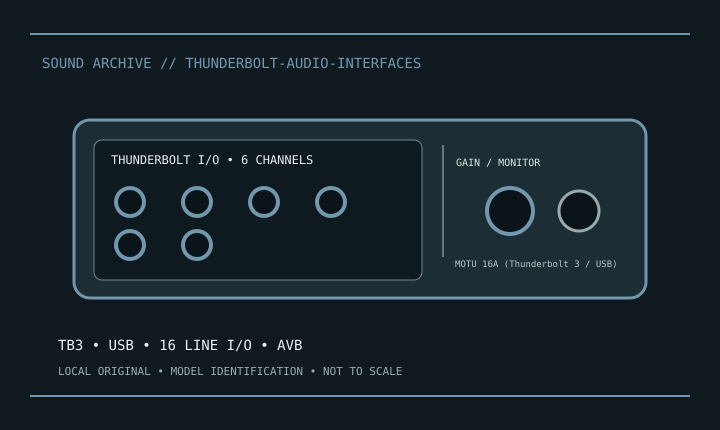

[ INDIVIDUAL MODEL // SOUND HARDWARE ]
MOTU 16A (Thunderbolt 3 / USB)
Thunderbolt 3/USB AVB interface with sixteen balanced line inputs and outputs, onboard mixer; 24-bit/192 kHz. No mic preamps/phantom.

Model-specific specifications
| Exact model / scope | MOTU 16A (Thunderbolt 3 / USB). Retain exact generation, power, AVB topology and routing. Line inputs do not supply mic gain or phantom. |
|---|---|
| Bus / host | Thunderbolt host connection; verify controller, cable, generation and OS in the manufacturer compatibility guide. |
| Documented functions / connectors | Thunderbolt 3/USB AVB interface with sixteen balanced line inputs and outputs, onboard mixer; 24-bit/192 kHz. No mic preamps/phantom. |
| Conversion / formats | Conversion rates and digital channel capacity depend on model, rate and optical format. |
| Drivers / OS | Use the linked model-specific manufacturer support/manual page. Driver and supported OS availability depends on release; no undocumented OS compatibility is asserted. |
| Power / microphone | Use the documented mic preamp phantom controls; line-only products have no phantom. |
Compatibility & preservation
Retain exact generation, power, AVB topology and routing. Line inputs do not supply mic gain or phantom.
- Photograph model/revision, connectors and included accessories before service.
- Retain the matching manual, driver/firmware and known-working host/routing configuration.
- Follow documented signal levels, connector pinout and power requirements; physical fit alone is not compatibility.
Manufacturer sources
- Manufacturer product information — MOTU 16A (Thunderbolt 3 / USB)Product/model source; match the exact revision and board.
- Manufacturer support and documentationOfficial model documentation, drivers and OS compatibility information.